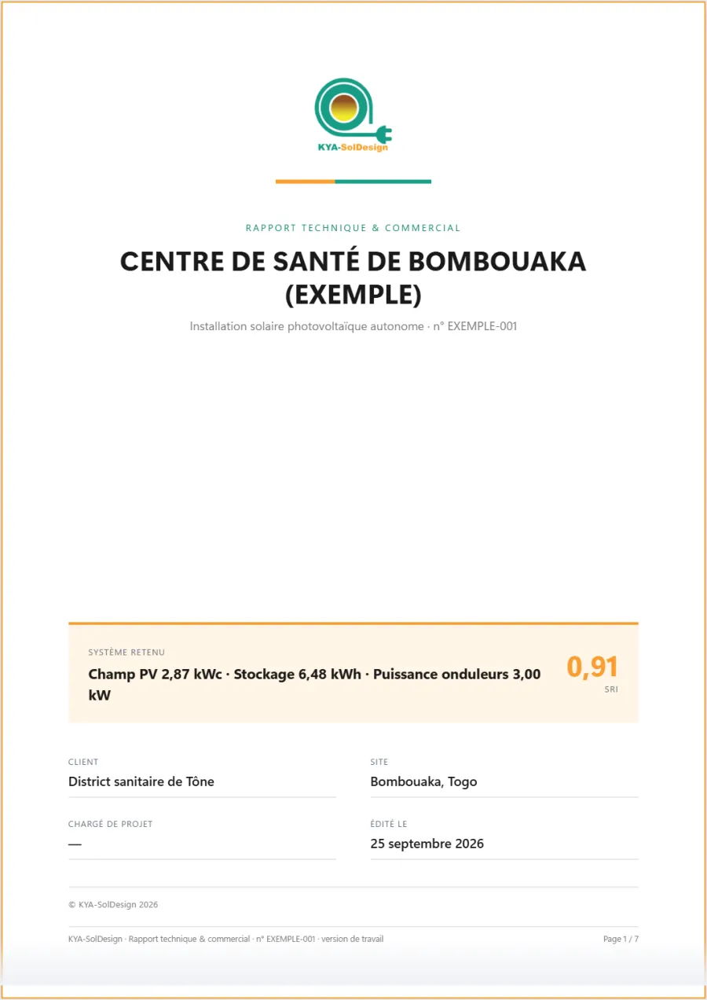
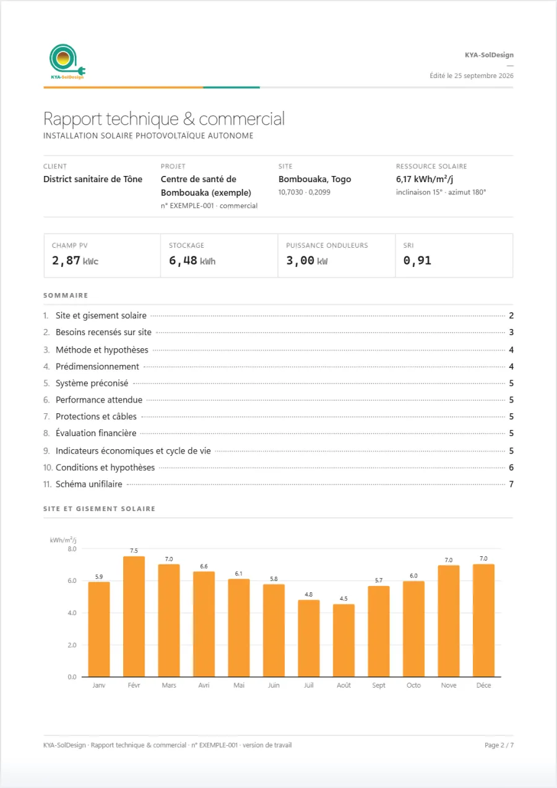
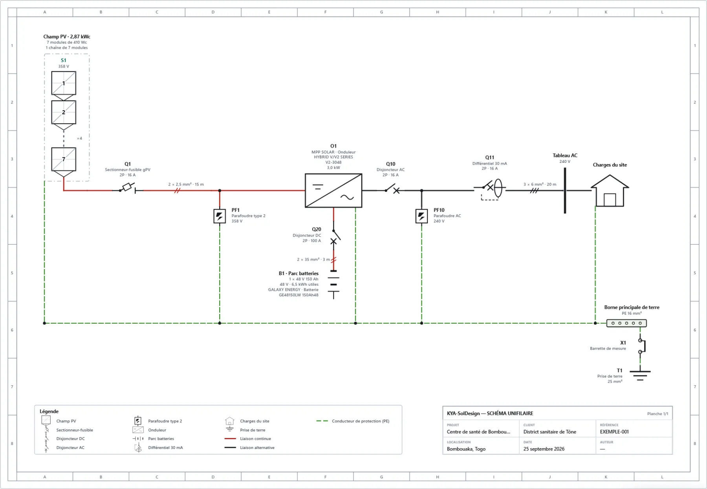

KYA-SolDesign Disponible
Conception et dimensionnement optimisés des systèmes photovoltaïques autonomes.
KYA-SolDesign dimensionne vos installations photovoltaïques autonomes en optimisant la fiabilité et le coût en même temps. C'est la méthode de KYA-Energy Group, appliquée à plus de 500 installations en Afrique de l'Ouest.
« Qui de vous, s'il veut bâtir une tour, ne s'assied d'abord pour calculer la dépense et voir s'il a de quoi la terminer ? »Luc 14, 28
Des panneaux et des batteries qui ne serviront jamais. Le devis grimpe, le client hésite, le projet part chez un autre.
Le système tient en saison sèche et lâche en saison des pluies. Les batteries s'usent, la confiance aussi.
Parmi toutes les configurations qui tiennent la fiabilité que vous visez, il retient la moins coûteuse. Les deux à la fois, jamais l'une contre l'autre.
Chaque point est une configuration champ + stockage, simulée heure par heure sur l'année. Déplacez le seuil : la configuration retenue est toujours la moins chère de celles qui le tiennent.
Illustration sur un projet type : les valeurs réelles dépendent de votre site et de vos besoins.
Sûre, mais le client paie des batteries qui dorment la plupart de l'année.
Séduisante sur le devis, elle ne sert qu'une partie de la demande.
que la plus fiable, avec la fiabilité visée tenue.
Un système « à peu près », dimensionné sur une journée moyenne.
Un système qui sert la demande toute l'année, au coût le plus bas pour cette fiabilité.
« Faites-nous confiance. »
SRI et SVI chiffrés avec la météo réelle du site : vous montrez la fiabilité au lieu de la promettre.
Des tableurs, des ressaisies, des allers-retours.
Dimensionnement, protections, câbles, chiffrage et documents s'enchaînent sans ressaisie.
Chercher la météo, mettre en page, redessiner le schéma.
Météo téléchargée selon la localisation ; rapport, schéma et proforma générés, modifiables.
Chaque étape part des résultats de la précédente. Les écrans viennent du projet exemple.




PDF ou Word, pages A4 et sommaire : le site, les besoins, la méthode, le système, sa fiabilité.
Généré automatiquement, avec protections, sections de câbles et mise à la terre.
Prix, TVA, conditions : prête à envoyer, à la référence et à la version du dossier.
Des études plus rapides, des devis justes, des dossiers professionnels qui font signer.
Édition CommercialeDes études standardisées, comparables d'un site à l'autre, avec la fiabilité chiffrée.
Édition CommercialeDes données réelles de site pour apprendre à dimensionner juste, et former les compétences africaines de demain.
Éditions Académique et Étudiant« Nous montrons au client ce que son système servira en août, pas une moyenne. Il signe plus vite. »
« Le rapport, la proforma et le schéma sortent de la même étude. Plus de ressaisie, plus d'erreur de recopie. »
« Mes étudiants comprennent enfin pourquoi le système le moins cher n'est pas le plus économique. »
Conception et dimensionnement optimisés des systèmes photovoltaïques autonomes.
Présentation à venir.
Choisissez votre édition, payez par Mobile Money ou carte, et activez KYA-SolDesign avec votre clé. Vos projets vous appartiennent : même à l'échéance, ils restent consultables et imprimables.